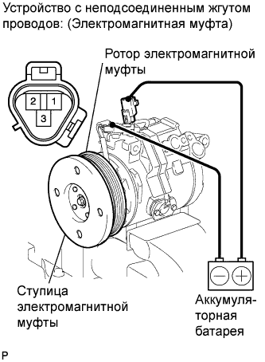

КОМПРЕССОР (для моделей с 2TR-FE) > ПРОВЕРКА |
| 1. ПРОВЕРЬТЕ ЭЛЕКТРОМАГНИТНУЮ МУФТУ В СБОРЕ |
|  |
Проверьте работу электромагнитной муфты.
Убедитесь, что когда положительный вывод аккумуляторной батареи соединяется с контактом 3 электромагнитной муфты, а отрицательный вывод – с проводом соединения с массой, ступица электромагнитной муфты и ротор электромагнитной муфты блокируются.
Если результат не соответствует требованиям, замените электромагнитную муфту в сборе.
Измерьте сопротивление.
Измерьте сопротивление между контактами 1 и 2.